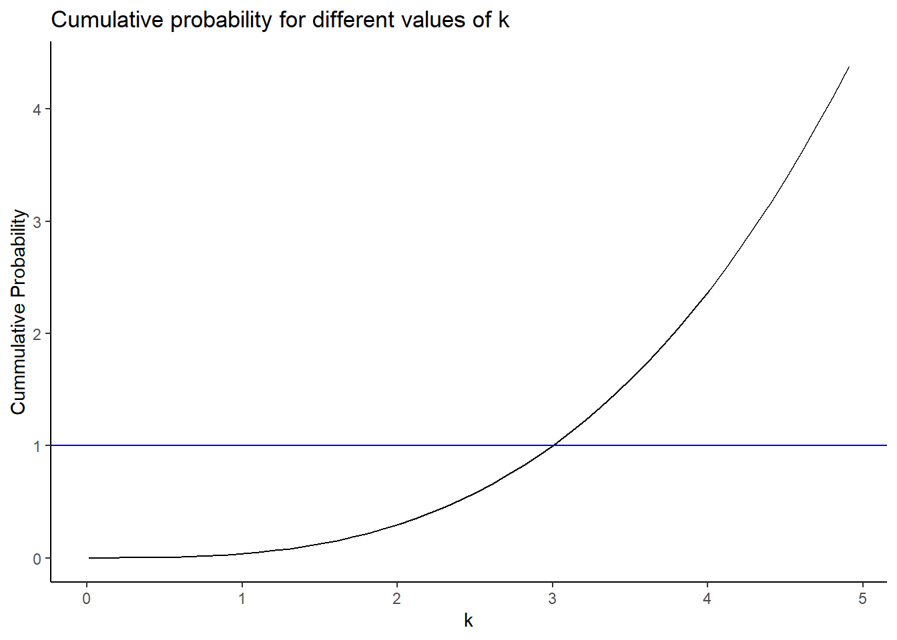
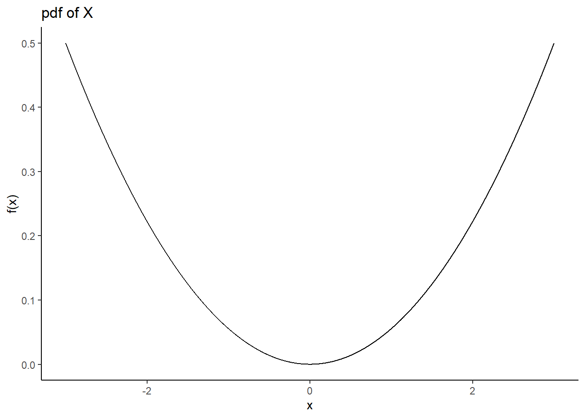
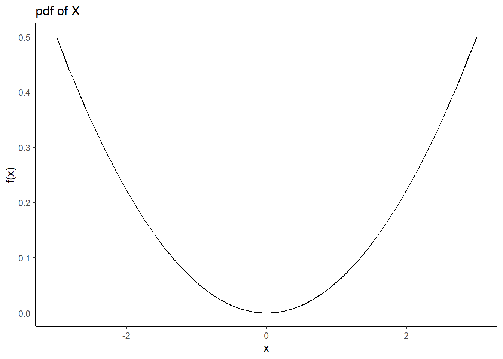
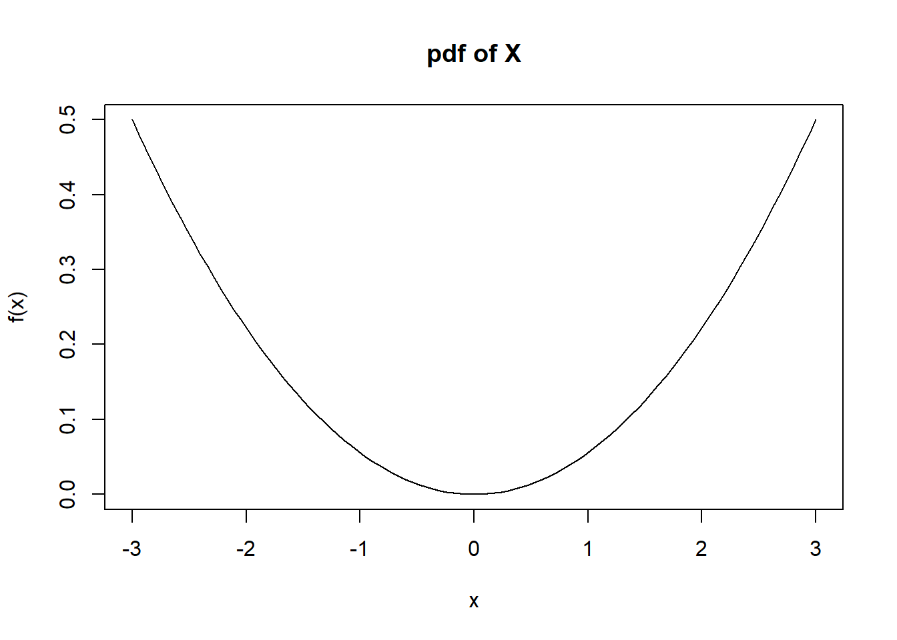
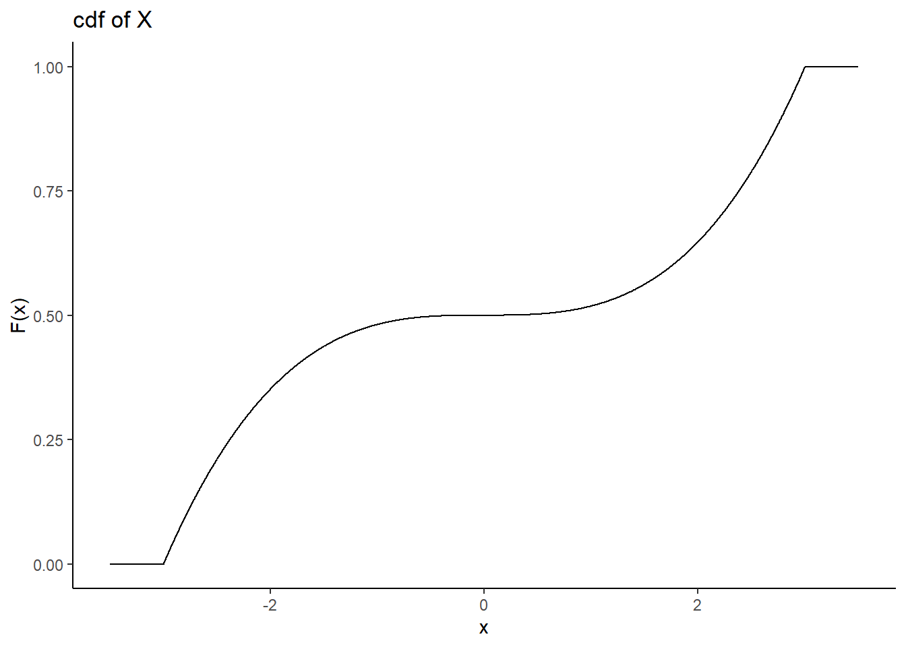
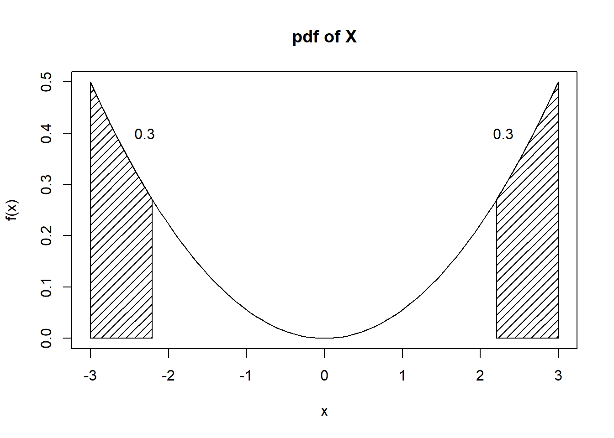
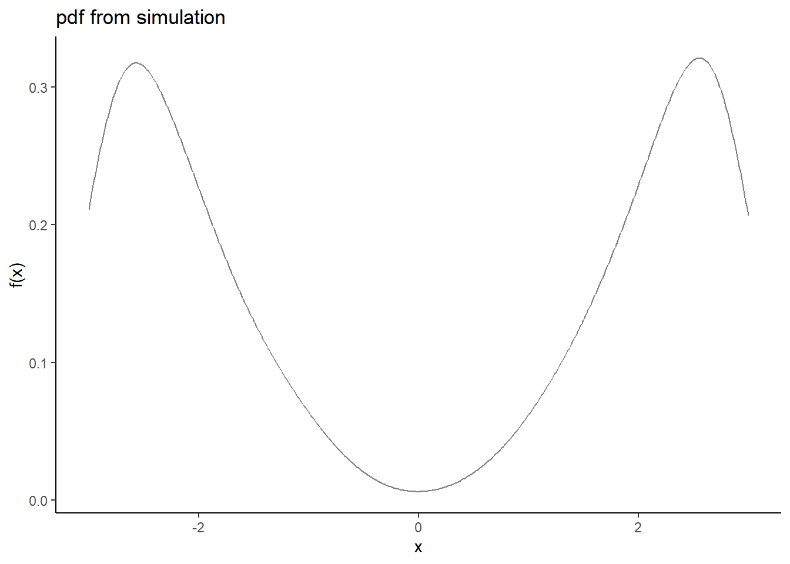

Chapter 11 Continuous Random Variables
11.1 Objectives
- Define and properly use the new terms to include probability density function (pdf) and cumulative distribution function (cdf) for continuous random variables.
- Given a continuous random variable, find probabilities using the pdf and/or the cdf.
- Find the mean and variance of a continuous random variable.
11.2 Homework
11.2.1 Problem 1
1. Let \(X\) be a continuous random variable on the domain \(-k \leq X \leq k\). Also, let \(f(x)=\frac{x^2}{18}\).
- Assume that \(f(x)\) is a valid pdf. Find the value of \(k\).
Because \(f\) is a valid pdf, we know that \(\int_{-k}^k \frac{x^2}{18}\mathop{}\!\mathrm{d}x = 1\). So, \[ \int_{-k}^k \frac{x^2}{18}\mathop{}\!\mathrm{d}x = \frac{x^3}{54}\bigg|_{-k}^k = \frac{k^3}{54}-\frac{-k^3}{54}=\frac{k^3}{27}=1 \]
Thus, \(k=3\).
Using R, see if you can follow the code.
domain <- seq(.01,5,.1)
gf_line(my_pdf(domain)~domain) %>%
gf_theme(theme_classic()) %>%
gf_labs(title="Cumulative probability for different values of k",x="k",y="Cummulative Probability") %>%
gf_hline(yintercept = 1,color = "blue")
Looks like \(k \approx 3\) from the plot.
## [1] 2.999997- Plot the pdf of \(X\).
x<-seq(-3,3,0.001)
fx<-x^2/18
gf_line(fx~x,ylab="f(x)",title="pdf of X") %>%
gf_theme(theme_classic())
ggplot(data.frame(x=c(-3, 3)), aes(x)) +
stat_function(fun=function(x) x^2/18) +
theme_classic() +
labs(y="f(x)",title="pdf of X")

- Find and plot the cdf of \(X\). \[ F_X(x)=\mbox{P}(X\leq x)=\int_{-3}^x \frac{t^2}{18}\mathop{}\!\mathrm{d}t = \frac{t^3}{54}\bigg|_{-3}^x = \frac{x^3}{54}+\frac{1}{2} \]
\[ F_X(x)=\left\{\begin{array}{ll} 0, & x<-3 \\ \frac{x^3}{54}+\frac{1}{2}, & -3\leq x \leq 3 \\ 1, & x>3 \end{array}\right. \]
x<-seq(-3.5,3.5,0.001)
fx<-pmin(1,(1*(x>=-3)*(x^3/54+1/2)))
gf_line(fx~x,ylab="F(x)",title="cdf of X") %>%
gf_theme(theme_classic())
- Find \(\mbox{P}(X<1)\). \[ \mbox{P}(X<1)=F(1)=\frac{1}{54}+\frac{1}{2}=0.519 \]
## 0.5185185 with absolute error < 5.8e-15- Find \(\mbox{P}(1.5<X\leq 2.5)\). \[ \mbox{P}(1.5< X \leq 2.5)=F(2.5)-F(1.5)=\frac{2.5^3}{54}+\frac{1}{2}-\frac{1.5^3}{54}-\frac{1}{2}=0.227 \]
## 0.2268519 with absolute error < 2.5e-15- Find the 80th percentile of \(X\) (the value \(x\) for which 80% of the distribution is to the left of that value).
Need \(x\) such that \(F(x)=0.8\). Solving \(\frac{x^3}{54}+\frac{1}{2}=0.8\) for \(x\) yields \(x=2.530\).
## $root
## [1] 2.530293
##
## $f.root
## [1] -1.854422e-06
##
## $iter
## [1] 6
##
## $init.it
## [1] NA
##
## $estim.prec
## [1] 6.103516e-05- Find the value \(x\) such that \(\mbox{P}(-x \leq X \leq x)=0.4\).
Because this distribution is symmetric, finding \(x\) is equivalent to finding \(x\) such that \(\mbox{P}(X>x)=0.3\). (It helps to draw a picture). Thus, we need \(x\) such that \(F(x)=0.7\). Solving \(\frac{x^3}{54}+\frac{1}{2}=0.7\) for \(x\) yields \(x=2.210\).

- Find the mean and variance of \(X\). \[ \mbox{E}(X)=\int_{-3}^3 x\cdot\frac{x^2}{18}\mathop{}\!\mathrm{d}x = \frac{x^4}{72}\bigg|_{-3}^3=\frac{81}{72}-\frac{81}{72} = 0 \]
\[ \mbox{E}(X^2)=\int_{-3}^3 x^2\cdot\frac{x^2}{18}\mathop{}\!\mathrm{d}x = \frac{x^5}{90}\bigg|_{-3}^3=\frac{243}{90}-\frac{-243}{90} = 5.4 \]
\[ \mbox{Var}(X)=\mbox{E}(X^2)-\mbox{E}(X)^2=5.4-0^2=5.4 \]
- Simulate 10000 values from this distribution and plot the density.
This is tricky since we need a cube root function. Just raising to the one-third power won’t work. Let’s write our own function.
results %>%
gf_dens(~cuberoot) %>%
gf_theme(theme_classic()) %>%
gf_labs(title="pdf from simulation",x="x",y="f(x)") 
Notice that the smoothing operation goes past the support of \(X\) and thus shows a concave down curve. We could clean up by limiting the x-axis to the interval [-3,3].
##
## quantitative variables:
## name class min Q1 median Q3 max
## ...1 cuberoot numeric -2.999981 -2.382864 -0.1574198 2.376346 2.999347
## mean sd n missing
## ...1 -0.002416475 2.322639 10000 011.2.2 Problem 2
2. Let \(X\) be a continuous random variable. Prove that the cdf of \(X\), \(F_X(x)\) is a non-decreasing function. (Hint: show that for any \(a < b\), \(F_X(a) \leq F_X(b)\).)
Let \(a<b\), where \(a\) and \(b\) are both in the domain of \(X\). Note that \(F_X(a)=\mbox{P}(X\leq a)\) and \(F_X(b)=\mbox{P}(X\leq b)\). Since \(a<b\), we can partition \(\mbox{P}(X\leq b)\) as \(\mbox{P}(X\leq a)+\mbox{P}(a < X \leq b)\). One of the axioms of probability is that a probability must be non-negative, so I know that \(\mbox{P}(a < X \leq b)\geq 0\). Thus, \[ \mbox{P}(X\leq b)=\mbox{P}(X\leq a)+\mbox{P}(a < X \leq b) \geq \mbox{P}(X\leq a) \]
So, we have shown that \(F_X(a)\leq F_X(b)\). Thus, \(F_X(x)\) is a non-decreasing function.